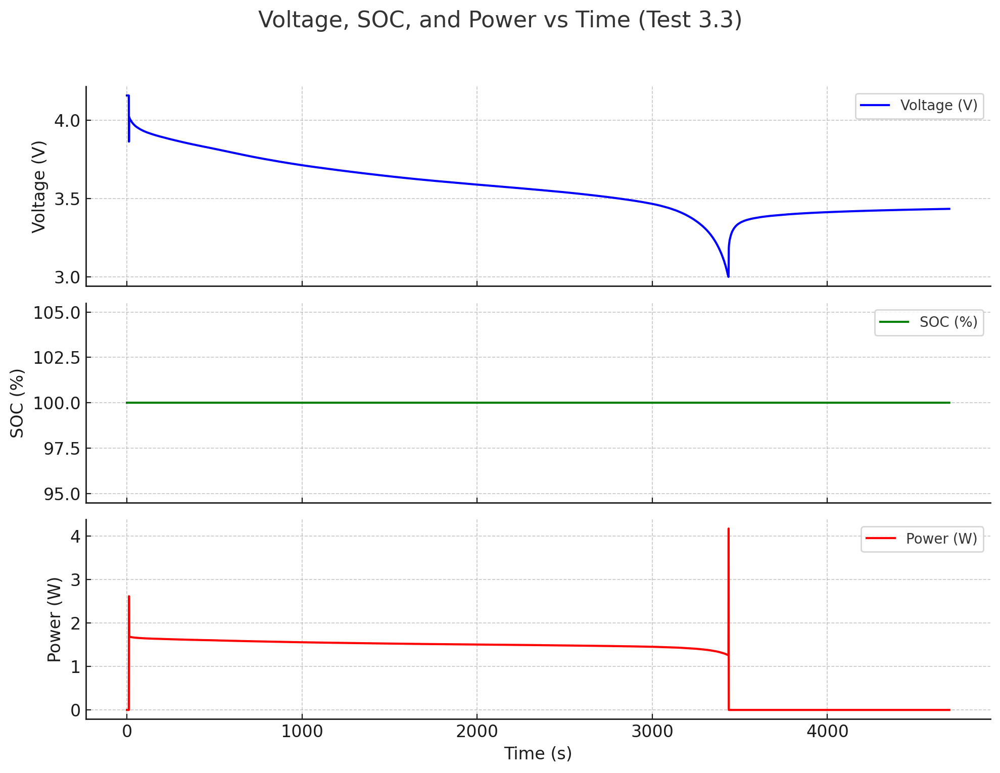
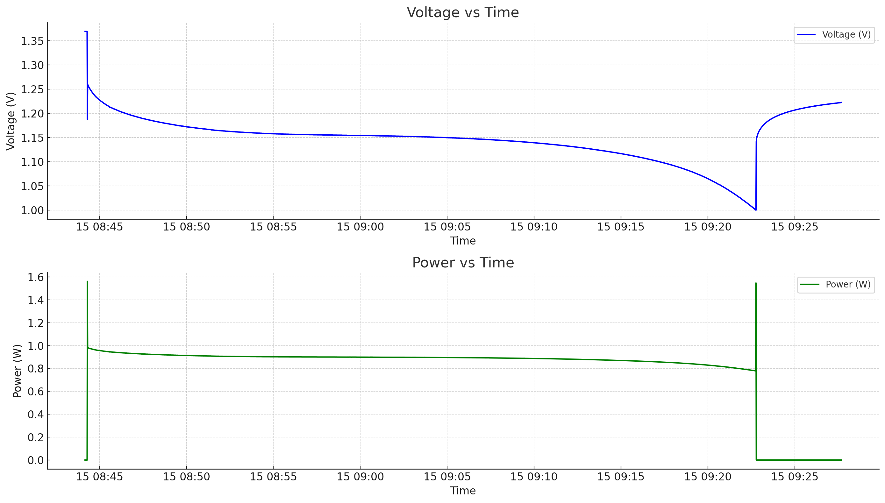
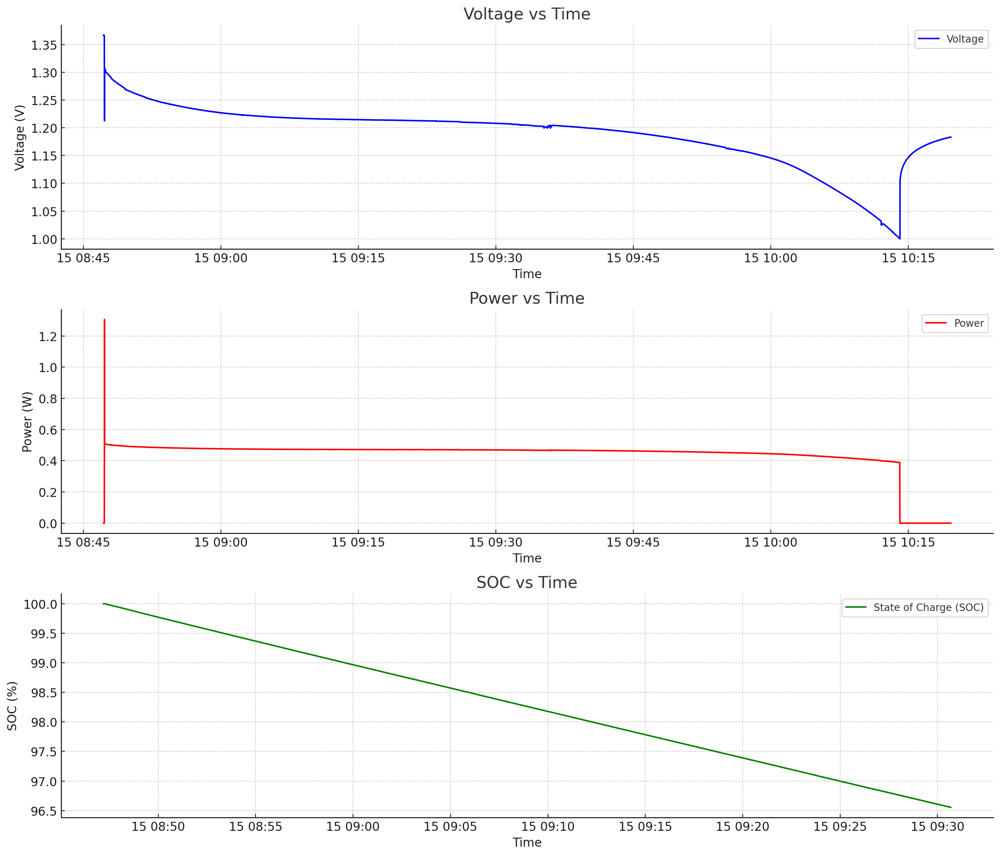
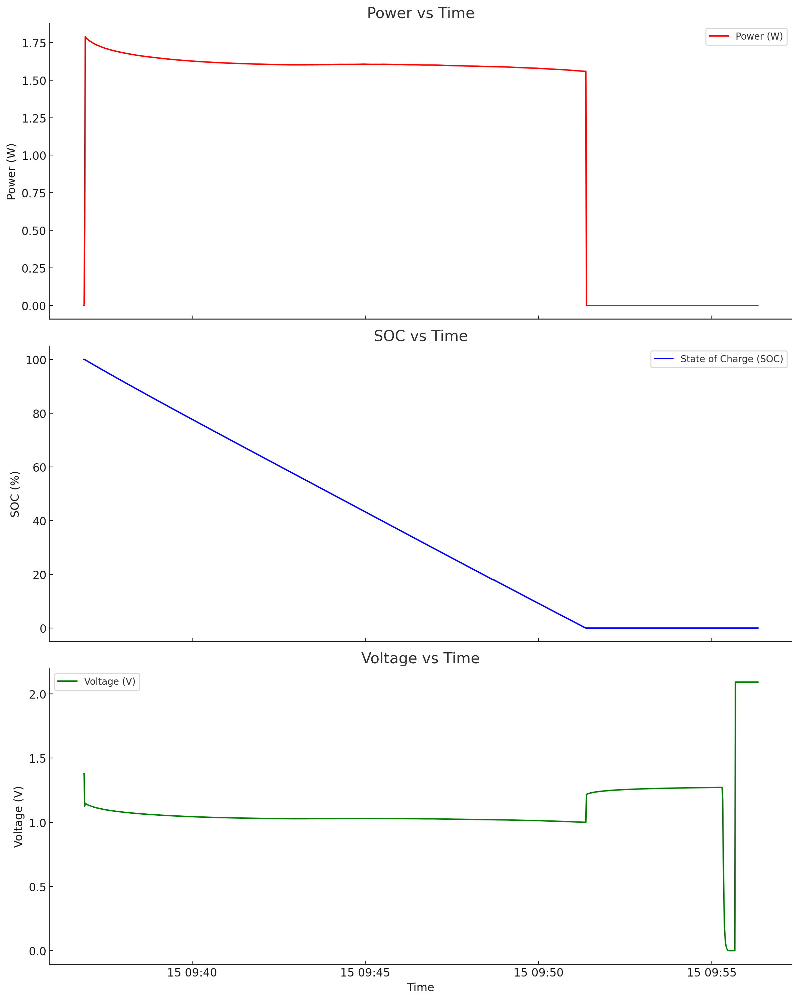
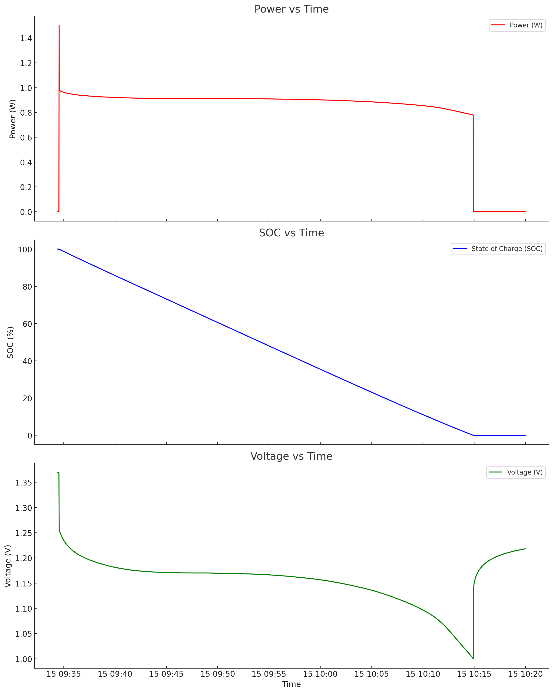
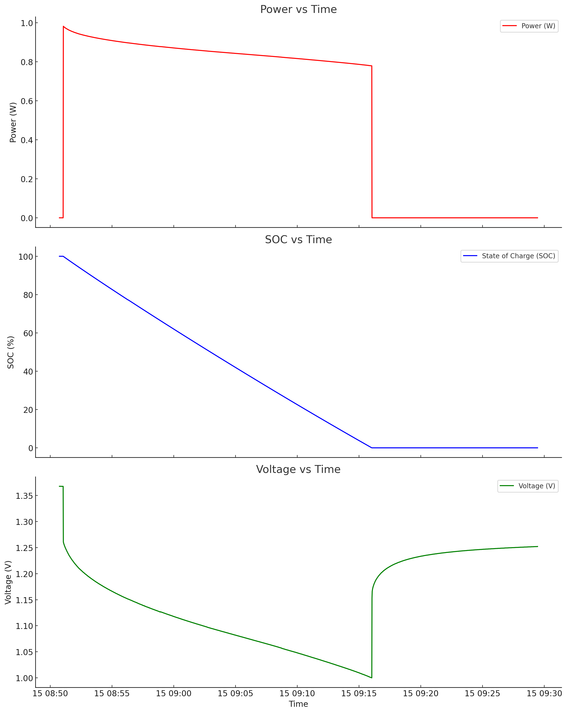
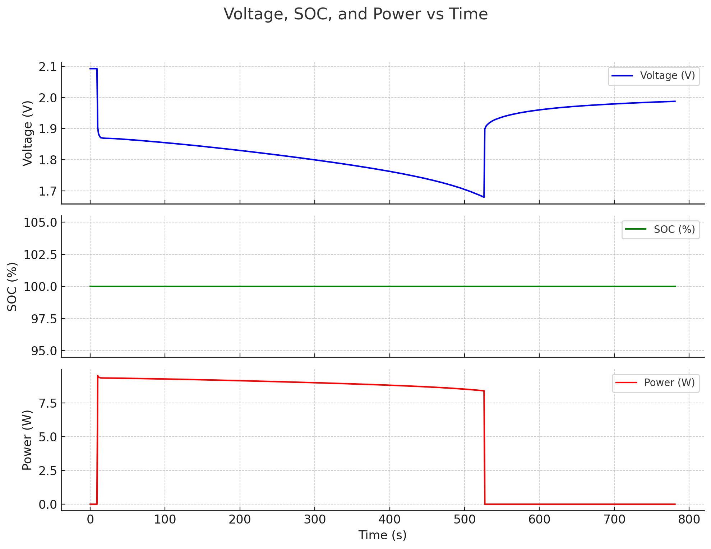

Technical question
How do C-rate, temperature and chemistry change usable capacity, voltage stability and delivered power during controlled battery discharge?
7tests
3chemistries
3temperatures/rates
Battery characterisation · Electrochemistry · C-rate · KTH MJ2386
MJ2386 Energy Storage Technology lab: seven discharge tests across three battery chemistries (Ni-MH 780 mAh, Li-Po 420 mAh, Lead-acid 2500 mAh), three C-rates (0.5, 1, 2) and three temperatures (ambient, +40°C, −10°C). Results characterise voltage, state of charge, and power discharge behaviour and demonstrate the practical trade-offs between chemistry, rate and operating temperature.

Evidence dashboard
How do C-rate, temperature and chemistry change usable capacity, voltage stability and delivered power during controlled battery discharge?
Cells were fully charged, discharged against a controlled load and analysed through voltage, SOC and power traces. The dark plots below are used as evidence images so the page keeps one visual language.
High C-rate increases burst power but reduces accessible capacity; cold operation sharply depresses voltage; Li-Po provides a long flat voltage plateau compared with lead-acid under the tested conditions.
Chemistry comparison runtime: lead-acid about 500 s, Li-Po about 3,500 s under the tested cases.
The lab is small-scale cell evidence rather than a full battery-management model. Its value is physical interpretation: internal resistance, Peukert behaviour and temperature derating are visible directly in the measured traces.
All batteries were fully charged before each test and connected to a DC load terminal with current, voltage cutoff and capacity configured to match the test specification. Temperature-specific tests were conducted with terminals preheated to +40°C or cooled to −10°C before discharge commenced.
The three ambient Ni-MH tests isolated the effect of discharge rate while holding chemistry and temperature constant.
At 0.5C, voltage maintained a prolonged flat plateau before declining gradually — the hallmark of efficient energy extraction with low internal ohmic losses. At 1C the plateau shortened and the voltage drop steepened, but remained well-behaved. At 2C the plateau collapsed almost entirely: voltage fell sharply from the start due to the high current demand amplifying internal resistance losses (V = IR⊂i;), and the termination voltage was reached quickly. Higher C-rates cause more energy to be dissipated as heat rather than delivered to the load.
The SOC curves confirm that the nominally rated 780 mAh capacity is not fully accessible at high C-rates: the cell reaches its termination voltage before the theoretical charge is exhausted. This is the Peukert effect — apparent capacity decreases with increasing discharge current.
At 2C, initial power output is the highest of the three tests but declines rapidly as voltage falls. At 1C, power is relatively stable for a moderate period. At 0.5C, power delivery is the most consistent and sustained. The cross-over — where the 2C curve drops below 0.5C in delivered power — demonstrates that burst power comes at the cost of total energy delivered and discharge longevity.
At 0.5C, voltage remains high across most of the SOC range, declining only near full depletion. At 2C, voltage drops sharply even at high SOC, meaning the battery appears to be more depleted than it actually is due to internal resistance. This voltage depression under load is reversible: if the 2C load were removed, the voltage would recover. It is therefore a rate-induced effect rather than true capacity loss.
Holding chemistry and C-rate constant, temperature was varied between +40°C and −10°C to isolate its effect.
At +40°C the battery shows a slower, more gradual voltage decline across all four analysis dimensions (voltage vs time, SOC vs time, power vs time, voltage vs SOC). Elevated temperature lowers the internal resistance of the electrolyte and speeds up the redox kinetics, allowing the cell to sustain current delivery with lower voltage penalty.
At −10°C the voltage drops rapidly from the start, SOC depletes faster, power output is lower and declines more quickly, and the voltage-SOC profile shows sharp depletion even at high residual SOC. Cold temperatures increase ionic resistance in the electrolyte and slow the half-reactions at both electrodes, effectively shrinking the accessible capacity. The cell terminates discharge with usable charge still chemically stored but electrochemically inaccessible under load.
This result directly explains why EV battery management systems derate available power and capacity at low ambient temperatures, and why battery pre-conditioning (warming) before fast charging or high-power discharge is operationally important.
Lead-acid starts at approximately 1.9 V and declines steadily over a relatively short discharge period. Li-Po starts at approximately 4 V, maintains an extended flat plateau, and then drops steeply near the end of discharge — the characteristic Li-Po profile arising from the lithium intercalation chemistry. The contrast is stark: lead-acid shows a quasi-linear decay while Li-Po holds a nearly constant voltage for most of its capacity window before collapsing.
The lead-acid cell discharged to zero SOC in approximately 500 seconds, while the Li-Po reached zero in approximately 3,500 seconds — seven times longer despite having far less rated capacity (420 mAh vs 2500 mAh). The lead-acid result is partly explained by the higher 2C rate (vs 1C for Li-Po): at 2C from a 2500 mAh cell, the theoretical discharge current is 5 A, which at 1.9 V represents ~9.5 W, consistent with the observed initial power of approximately 9.4 W.
Lead-acid initial power ~9.4 W, declining steadily over the short discharge window. Li-Po initial power ~1.65 W, declining gradually throughout its much longer discharge and then dropping sharply near the end. The Li-Po power profile is much more consistent over time, confirming its suitability for applications requiring steady power delivery (consumer electronics, portable devices) rather than high burst power.
Lead-acid: relatively linear voltage decline from 1.9 V at 100% SOC to ~1.7 V at 50% SOC — indicating a fairly linear Gibbs free energy relationship with state of charge. Li-Po: voltage plateau from 100% SOC until approximately 30% SOC remains around 4 V, then drops sharply to 3 V at 0% SOC. This flat profile makes Li-Po more difficult to gauge by voltage measurement alone but simplifies power electronics design (stable DC bus voltage for most of the cycle).
Test results






Relevance
The C-rate, temperature and chemistry findings from this lab map directly to real system design decisions: battery selection for off-grid storage (Li-Po or Ni-MH for sustained delivery vs lead-acid for cost), sizing for cold climates (capacity derating at −10°C), and understanding why fast charging or high-load discharge degrades both immediate performance and long-term cell life. The Peukert effect observed at 2C explains why BESS systems are typically sized at 0.25–0.5C for daily cycling rather than their peak-rated rates.
This lab sits alongside the M-TES PCM thermal characterisation experiment (also MJ2386) as the electrochemical counterpart: both involve measuring stored energy released under a controlled discharge protocol, comparing experimental results to theoretical expectations, and understanding how operating conditions shift system performance. Together they form a complete experimental grounding in energy storage characterisation methodology applicable to both electrical and thermal storage technologies.